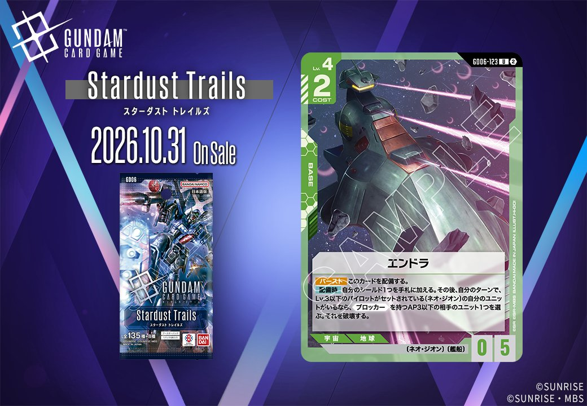
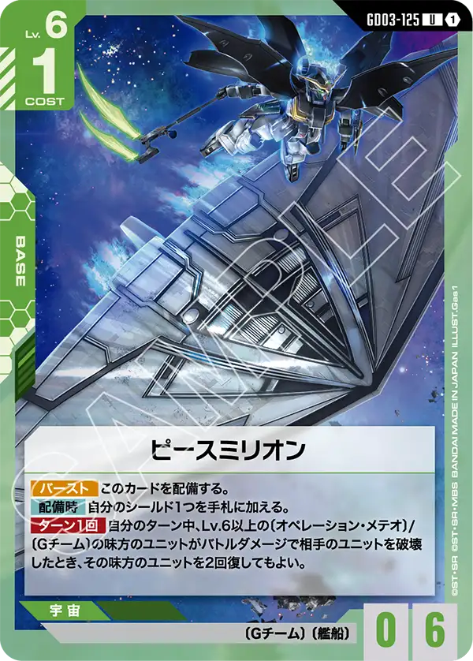

拡張パック「GD06」に収録される新カード2枚を紹介します。緑のCOMMAND「気配察知」（GD06-106）と緑のBASE「エンドラ」（GD06-123）で、どちらも発売日は2026年10月31日です。同じ緑のカードでも、一方はCOMMAND、もう一方はBASEとカードタイプが異なるため、本記事ではタイプごとに1枚ずつ取り上げていきます。
気配察知 (GD06-106)
| 色 | 緑 | タイプ | COMMAND |
| Lv | 4 | コスト | 1 |
効果: 【アクション】このバトル中、自分のシールドエリアのカードは、AP6以下の相手のユニットからダメージを受けない。
「気配察知」は、コスト1・Lv.4の緑のコマンドです。【アクション】で使用し、そのバトル中は自分のシールドエリアのカードがAP6以下の相手ユニットからダメージを受けなくなります。コスト1で1回のアタックによるシールドへの被害を止められるため、守りの手段が足りない局面でもしのげるでしょう。ただし、相手ユニットを破壊する効果はないので、相手の盤面はそのまま残ります。AP7以上のユニットには効きません。ザクⅡの【アタック時】AP+2のようにアタック時にAPを上げる効果があると、基準の6を超えられる場合がある点にも注意が必要です。相手ユニットのAPを確認し、使う場面を選ぶカードといえます。

エンドラ (GD06-123)
| 色 | 緑 | タイプ | BASE |
| Lv | 4 | コスト | 2 |
| AP | 0 | HP | 5 |
| 特徴 | 〔ネオ・ジオン〕、〔艦船〕 | ||
効果: 【バースト】このカードを配備する。【配備時】自分のシールド1つを手札に加える。その後、自分のターンで、Lv.3以下のパイロットがセットされている〔ネオ・ジオン〕の自分のユニットがいるなら、《ブロッカー》を持つAP3以下の相手のユニット1つを選ぶ。それを破壊する。
エンドラはLv.4・コスト2・HP5のベースで、リンクの設定はありません。【配備時】に自分のシールド1つを手札に加えるため、手札は1枚増えますが、シールドは1つ減ります。そのあとの破壊効果は、自分のターンであり、Lv.3以下のパイロットをセットした〔ネオ・ジオン〕のユニットが自分の場にいることが条件です。対象も《ブロッカー》を持つAP3以下の相手ユニットに限られます。【バースト】で配備された場合は相手のターンなので、破壊効果は発動しません。手札から出すときは、条件を満たすユニットを先に配備しておくことが前提になります。そのうえで相手の《ブロッカー》を取り除き、自分のアタックを通しやすくする使い方になるでしょう。
関連カード
-
 ザクⅡ(ST03-008)緑系デッキ内採用率24.2% (2095デッキ)
ザクⅡ(ST03-008)緑系デッキ内採用率24.2% (2095デッキ) -
 リック・ドム(GD01-030)緑系デッキ内採用率23.2% (2006デッキ)
リック・ドム(GD01-030)緑系デッキ内採用率23.2% (2006デッキ) -
 ザクⅡ（シャア・アズナブル機）(ST03-006)緑系デッキ内採用率15% (1298デッキ)
ザクⅡ（シャア・アズナブル機）(ST03-006)緑系デッキ内採用率15% (1298デッキ) -
 シャア・アズナブル(ST03-011)緑系デッキ内採用率13.5% (1168デッキ)
シャア・アズナブル(ST03-011)緑系デッキ内採用率13.5% (1168デッキ) -
 ジオング(GD04-017)緑系デッキ内採用率12.3% (1064デッキ)
ジオング(GD04-017)緑系デッキ内採用率12.3% (1064デッキ) -
ラー・カイラム(GD05-125)緑系デッキ内採用率8.1% (698デッキ)
-
ファルメル(ST03-016)緑系デッキ内採用率7.3% (632デッキ)
-

ピースミリオン(GD03-125)緑系デッキ内採用率6.2% (534デッキ) -
 キュベレイ(ST13-001)緑系デッキ内採用率1.5% (130デッキ)
キュベレイ(ST13-001)緑系デッキ内採用率1.5% (130デッキ) -
 ハマーン・カーン(ST13-011)緑系デッキ内採用率1.5% (129デッキ)
ハマーン・カーン(ST13-011)緑系デッキ内採用率1.5% (129デッキ)